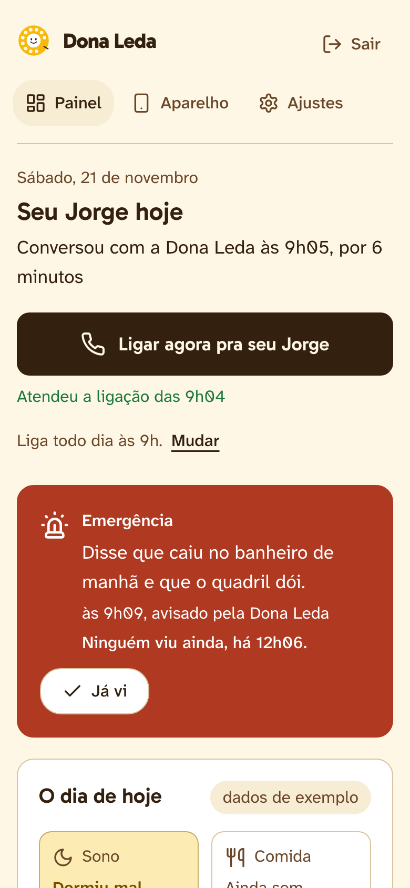

Quantas vezes você ainda vai ver sua mãe?
36
visitas
é o que me resta com a minha avó Leda
4 visitas por ano × 9 anos
IBGE, 2024
37%
dos brasileiros com 50 anos ou mais que têm filhos não veem nenhum deles toda semana
ELSI-Brasil · IBGE, 2025
Dona Leda
A assistente de cuidado de quem envelhece
Liga todo dia, conversa e avisa a família
R$ 2.800
R$ 6 mil
R$ 129,90
Cuidador
Casa de repouso
Dona Leda
Por mês · Cidesp e Mercado Mineiro, 2026
O idoso só precisa atender



→
→
1. Ela liga na hora combinadaO celular toca, e ele atende
2. Conversa e lembraPergunta do dia e do que ele já contou
3. A família vê no painelO dia, a semana e o aviso na hora
Por dentro: a conversa passa pela Agora
Agora, ao vivo
Lá fora funciona, e a gente testou
Lá fora
Aqui
Limites do nosso teste: uma noite e uma manhã, poucos avós, alguém da família do lado.
Dados públicos, lidos em 21/11/2026
35 milhões de idosos, e crescendo
35,2 mi
6,4 mi
700 mil
35,2 milhõesde idosos no Brasil75 milhões em 2070
6,4 milhõesmoram sozinhosR$ 10 bi por ano
700 milfamílias podem pagar hojeR$ 1,1 bi por ano
+ 8,7 milhões têm plano de saúde: até R$ 13,6 bi por ano
IBGE 2025 · IESS 2026 · estimativa do time, a R$ 129,90 por mês
Um produto, três caminhos até o idoso
Dona Leda
liga todo dia pro idoso
Da ligação diária ao segundo cérebro
Liga, lembra e avisa
O idoso que mora sozinho
Em 30 dias: as famílias que a casa parceira indicar
Pós-operatório
Liga todo dia depois da alta e pergunta da dor e do remédio
Telefone comum, pulseira e caixinha de voz
Segundo cérebro
Lembra de tudo que ele contou
E resolve por ele: pede o remédio e as compras, marca a consulta
Quem constrói a Dona Leda